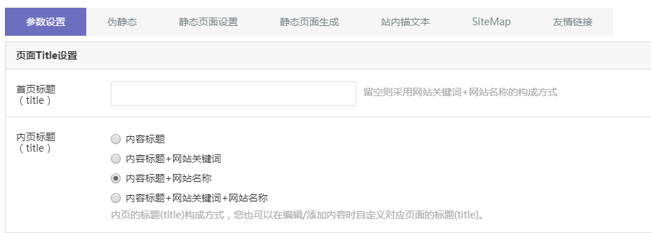
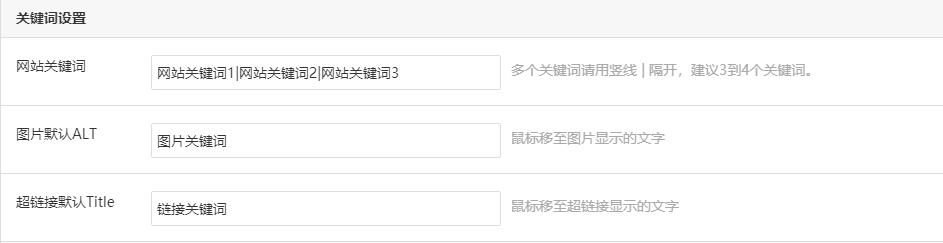
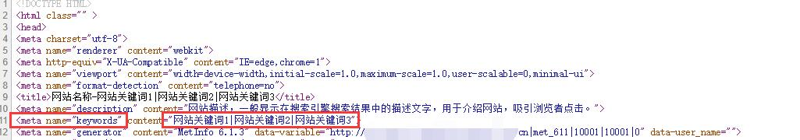
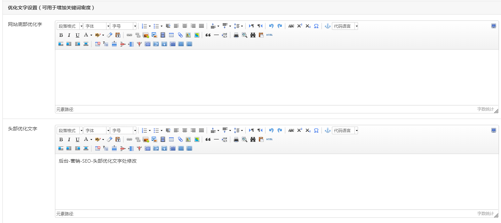

SEO参数设置
系统每个页面都可以单独设置页面 title、关键词和描述内容，以下设置是设置默认的SEO参数值，其他页面没有自定义设置时，可采用默认设置值。
页面title设置

首页标题：可以自定义设置，为空则采用关键词+网站名称（网站名称在基本信息中设置）的构成方式，访问网站首页，可查看到设置的首页标题信息，如下图:
网站关键词设置

网站关键词：SEO设置中的网站关键词跟基本信息中的网站关键词是同一个设置，不要过多，一般建议填写3、4个关键词，设置好之后，在浏览器中右键查看源代码可以查看到

优化文字设置
网站底部和头部优化文字，需要模板支持才能在前台显示。
